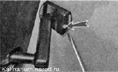

Внутреннее зеркало заднего вида снятие и установкаВнутреннее зеркало заднего вида приклеено к ветровому стеклу. При замене ветрового стекла необходимо переустановить зеркало. Для выполнения такой работы необходим специальный клей для стекла. В продаже имеются специальные ремонтные наборы для приклеивания зеркала. Помимо клея набор, как правило, укомплектован наждачной бумагой, скребком и салфетками, которые пропитаны специальными составами. Работу необходимо выполнять при температуре окружающего воздуха 10—25V Так как свойства препаратов, входящих в комплект, у различных производителей могут отличаться, при выполнении работы необходимо следовать инструкции, приложенной к набору. Ниже даны общие рекомендации по установке зеркала. Снятие 1. Подготавливаем автомобиль к выполнению работы и отсоединяем клемму от отрицательного вывода аккумуляторной батареи. 2. Шлицевой отверткой с тонким лезвием отворачиваем винт крепления зеркала. 
3. Сдвинув вверх, снимаем зеркало с кронштейна. При сбивании кронштейна стекло раскалывается. Поэтому снимать кронштейн следует с уже демонтированного стекла. 4. Зубилом сбиваем кронштейн со стекла. Установка 1. Удаляем остатки стекла с кронштейна и зачищаем наждачной бумагой поверхность кронштейна, предназначенную для нанесения клея. Салфетки следует использовать в течение двух минут после вскрытия упаковки. 2. Салфеткой с моющим составом очищаем стекло (в месте установки зеркала) и кронштейн.
3. На середине стекла, отступив около 50 мм от обивки потолка, маркером намечаем место установки зеркала (при необходимости воспользовавшись рулеткой или линейкой). 4. Второй салфеткой с активатором обезжириваем склеиваемые поверхности. 5. Наносим клей на кронштейн. 6. Прижимаем кронштейн к стеклу в соответствии с разметкой и удерживаем его в таком положении в течение минуты. Перед установкой зеркала на кронштейн необходимо выждать не менее 30 минут. 7. Надеваем на кронштейн зеркало и затягиваем винт крепления. |